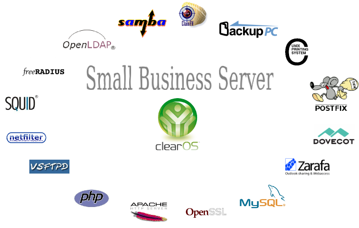

- Welkom
- Geen technisch talk, overzicht van OSS in onze school
- 15 jaar samen te vatten in 50 min, halve sec/dag
- rode draad -> tijdlijn: evolutie = exponentieel , densiteit
- waarover:
- ondersteundende applicaties
- servers, virtualisatie en private cloud
- netwerkapparatuur, routers en wifi
- helpdesk, inventarisatie en monitoring
- waarover niet:
- desktops en bijbehorende applicaties
- onderwijs-software, zoals wisa, schol en smartschool...

- waarom Linux OS
- OS en vrouwen
#!/usr/bin/python # Filename: species.py class species: '''Conventions Used in This Presentation''' def __init__(self, sex): '''Initializes the species data.''' self.sex = sex print '(Initializing %s)' % self.sex def __female__(self): if Species.sex == male: print 'calm down, it\'s easy' else: print 'oh dear, this is a more complex situation' mom = dad sister = brother sweetheart = loverboy wife == husband
- open source
- broncode aanpassen
- hoe software werkt
- software hergebruiken

- veiligheid open code
- tools
- Veiligste OS, beste sysadmin
- tips

- ups en downs
- leerkurve
- eigenschappen

- RHL/CentOS
- history


- Monitoring


- helpdesk:
- OCS
- GLPI


- Virtualiseren:
- XEN
- KVM
- Opennebula

- WRT
- DD-WRT
- OpenWRT

- Vyatta

- ClearOS als SBS
- ClearOS vs Zentyal
- applicaties


- ERP (Enterprise Resource Planning)
- tryton vs openerp vs SAP
- tryton modules

- config management
- puppet vs ansible


- Owncloud
used software for this presentation
- python hovercraft https://pypi.python.org/pypi/hovercraft/
- timeline http://thetimelineproj.sourceforge.net/
- inkscape http://inkscape.org/
- reStructuredText, impress.js, git, vim, firefox, .... on Fedora 19
Wii presenter tool
- wiipresent http://dag.wieers.com/home-made/wiipresent/

Questions ?
Links
- fedora https://fedoraproject.org/
- centos https://www.centos.org/
- postgresql http://www.postgresql.org/
- mariadb https://mariadb.org/
- zabbix http://www.zabbix.com/
- ocs http://www.ocsinventory-ng.org/en/
- glpi http://www.glpi-project.org/spip.php?lang=en
- kvm http://www.linux-kvm.org/page/Main_Page
- wrt https://openwrt.org/
- vyatta http://www.vyatta.com/
- clearos http://www.clearfoundation.com/
- tryton http://www.tryton.org/
- ansible http://www.ansibleworks.com/
- owncloud http://owncloud.org/